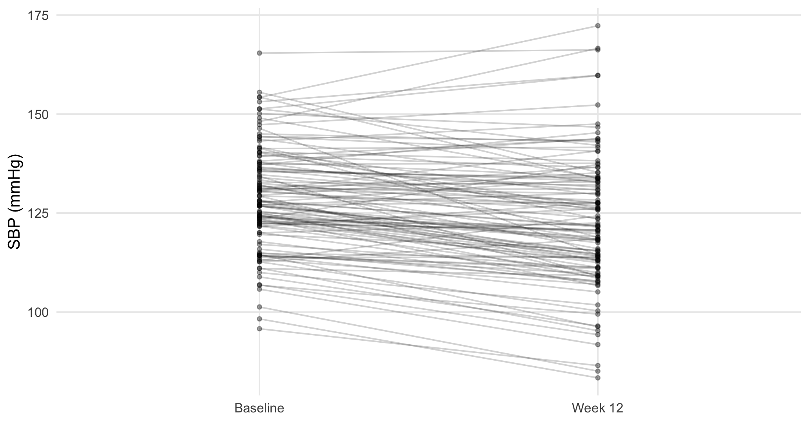
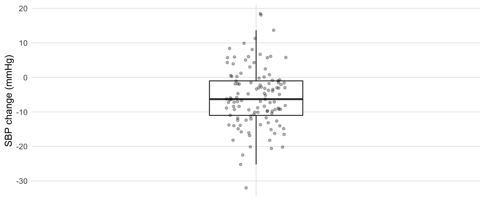
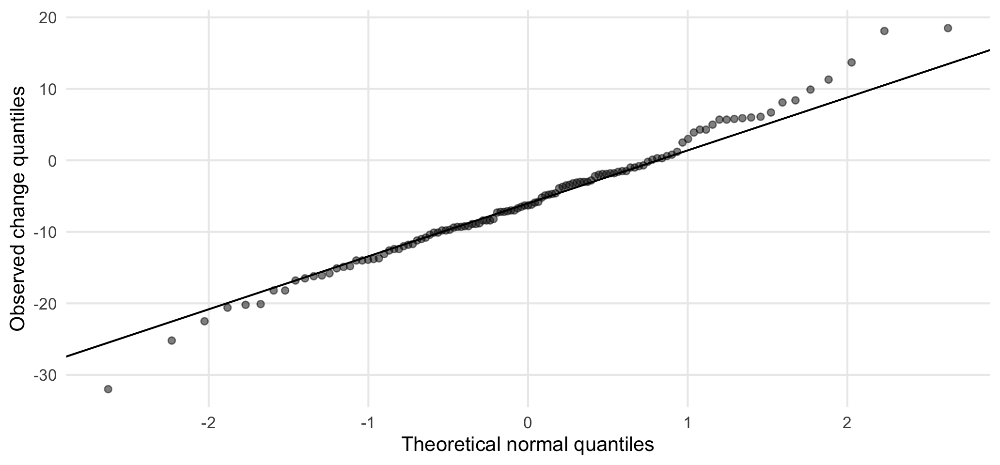

For Drug_A participants, SBP is measured at baseline and again at week 12 in the same participant. The paired difference for participant \(i\) is
\[ d_i=\text{SBP}_{i,\text{week 12}}-\text{SBP}_{i,\text{baseline}}. \]
Thus, \(d_i\) is the participant’s SBP change. A negative value indicates a reduction in SBP.
pair_sbp <- dat |> filter(treatment_arm=="Drug_A") |>
drop_na(sbp_baseline_mmHg, sbp_week12_mmHg) |>
mutate(sbp_change=sbp_week12_mmHg-sbp_baseline_mmHg)
pair_sbp |> summarise(
n=n(),
mean_baseline=mean(sbp_baseline_mmHg), mean_week12=mean(sbp_week12_mmHg),
mean_change=mean(sbp_change), sd_change=sd(sbp_change), median_change=median(sbp_change)
) |> kbl(digits=2, caption="Drug_A paired SBP summary")| n | mean_baseline | mean_week12 | mean_change | sd_change | median_change |
|---|---|---|---|---|---|
| 117 | 128.7 | 123 | -5.68 | 8.62 | -6.3 |
The paired analysis is based on sbp_change. The baseline and follow-up measurements are not treated as two independent samples.
pair_long <- pair_sbp |>
dplyr::select(patient_id, sbp_baseline_mmHg, sbp_week12_mmHg) |>
tidyr::pivot_longer(-patient_id, names_to="time", values_to="sbp") |>
mutate(time=factor(time, levels=c("sbp_baseline_mmHg","sbp_week12_mmHg"),
labels=c("Baseline","Week 12")))
ggplot(pair_long, aes(time, sbp, group=patient_id)) +
geom_line(alpha=.18) +
geom_point(alpha=.35, size=1.2) +
labs(x=NULL, y="SBP (mmHg)")
Figure 7.1: Participant-level SBP from baseline to week 12 in Drug_A.
The paired-line plot shows both the direction and magnitude of participant-level changes.
ggplot(pair_sbp, aes(x="", y=sbp_change)) +
geom_boxplot(width=.25, outlier.shape=NA) +
geom_jitter(width=.08, alpha=.30, size=1.3) +
labs(x=NULL, y="SBP change (mmHg)")
Figure 7.2: Distribution of within-participant SBP changes in Drug_A.
For paired data, analyze the change within each participant. Here, sbp_change is the difference between week-12 and baseline SBP. The boxplot is therefore used to check whether these individual changes are symmetric and whether any participants have unusually large increases or decreases.
ggplot(pair_sbp, aes(sample=sbp_change)) +
stat_qq(alpha=.5) +
stat_qq_line() +
labs(x="Theoretical normal quantiles", y="Observed change quantiles")
Figure 7.3: Q–Q plot of within-participant SBP changes in Drug_A.
shapiro_pair <- shapiro.test(pair_sbp$sbp_change)
tibble(W=unname(shapiro_pair$statistic), p_value=shapiro_pair$p.value) |>
kbl(digits=3, caption="Shapiro–Wilk test for paired SBP differences")| W | p_value |
|---|---|
| 0.991 | 0.689 |
The relevant normality assumption concerns the distribution of the within-participant SBP changes, \(d_i\). Equal baseline and week-12 variances are not required, so Levene’s test is not used for the paired t-test.
normal_diff <- shapiro_pair$p.value>=.05
if(normal_diff){
selected_test <- "Paired t-test"
fit <- t.test(pair_sbp$sbp_week12_mmHg, pair_sbp$sbp_baseline_mmHg, paired=TRUE)
reason <- "Paired differences are reasonably compatible with normality."
} else {
selected_test <- "Wilcoxon signed-rank test"
fit <- wilcox.test(pair_sbp$sbp_week12_mmHg, pair_sbp$sbp_baseline_mmHg,
paired=TRUE, exact=FALSE, conf.int=TRUE)
reason <- "Paired differences show evidence of departure from normality."
}
tibble(selected_test, reason) |> kbl(caption="Automated paired-test selection")| selected_test | reason |
|---|---|
| Paired t-test | Paired differences are reasonably compatible with normality. |
| estimate | statistic | p.value | parameter | conf.low | conf.high | method | alternative |
|---|---|---|---|---|---|---|---|
| -5.683 | -7.135 | 0 | 116 | -7.261 | -4.105 | Paired t-test | two.sided |
The operational rule is
| Distribution of paired differences | Selected analysis |
|---|---|
| approximately normal | paired t-test |
| substantial departure from normality | Wilcoxon signed-rank test |
For the paired t-test,
\[ t=\frac{\bar d}{s_d/\sqrt n}, \]
where \(\bar d\) is the mean within-person change and \(s_d\) is the SD of the paired differences. The estimate and confidence interval are expressed directly in mmHg.
The Wilcoxon signed-rank test compares paired differences using their ranks. It is an alternative to the paired t-test when the differences are not well suited to a mean-based analysis.
Report the effect estimate, 95% confidence interval, and p-value, together with the descriptive statistics that give the result context.
For independent groups, state the test used and the assumption that determined the choice. For paired data, report the average within-participant change and the corresponding paired-test result.